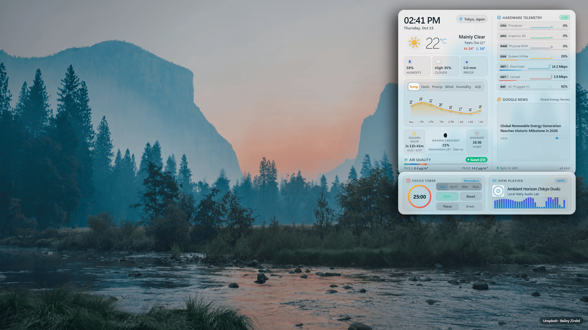

Local Wally HUD
Hardware-optimized ambient weather wallpaper and desktop dashboard for Windows 11 and Lively Wallpaper.


✨ Why Local Wally?
Animated wallpapers can cause noticeable background battery drain or system stutter during intensive tasks.
Zero Configuration Out of the Box
Finds your local weather, solar times, and air quality automatically without accounts, API keys, or credit cards. Just install and run.
Designed to Minimize Idle Overhead
Halts animation loops and canvas drawing when idle, occluded, or when games and fullscreen applications are running. Smooth 60 FPS visual effects activate only during active precipitation, audio visualization, or user interaction.
Automatic Game and Screen Parking
When you maximize a window, launch a game, or lock your screen, Lively Wallpaper pauses playback. Local Wally immediately parks all animation loops and clears canvas draw buffers.
Weather-Adaptive Solar Lighting
Dynamic landscape photography matches your screen resolution and current weather, illuminated by real-time sun angles, warm golden hour glows, and gentle nocturnal moonlit ambiance with shifting card drop shadows.
OneDrive Personal Settings Sync
Syncs your HUD preferences, custom API keys, and wallpaper favorites seamlessly across PCs via OAuth 2.0 Device Code Flow (microsoft.com/devicelogin). Operates with a strict privacy firewall: zero location data or GPS coordinates ever enter the cloud.
Wallpaper Favorites & Avoidance
Curate your desktop background using the floating action bar. Save favorite wallpapers to an acrylic slide-out gallery, or mark images as "Less like this" to avoid them in future rotations with a 6-second undo toast.
Truthful Weather Provenance & News Focus
Transparent weather telemetry with live relative age badges (Live, Cached, Stale, Fallback). Fine-tune regional news breadth with Nearby, Balanced, or Wider geographic scopes and refresh on demand.
🔑 Keyless Defaults vs. Keyed Providers
Local Wally functions completely out of the box with zero API keys. Commercial third-party keys are only required if you choose to activate a keyed provider:
| Telemetry Type | Default Provider (Zero Keys Needed) | Optional Keyed Providers (Key Required if Selected) |
|---|---|---|
| Weather & Forecast | Open-Meteo: High-precision global forecast models with zero configuration | WeatherAPI.com (free key), OpenWeatherMap (account key) |
| Air Quality (AQI) | Open-Meteo AQI: European AQI with PM2.5 and PM10 metrics | WAQI / AQICN (personal token) |
| Wallpaper Photos | Unsplash: Curated CDN photography matching live weather and resolution | Wallhaven, Pexels, Pixabay (personal API keys) |
| Regional News | Google News: Keyless regional RSS headlines via CORS proxy | NewsAPI, Currents News (personal API keys) |
| Music & Focus | Windows SMTC: Local Windows media transport controls + 32-bar visualizer | None needed (100% local) |
| Hardware Health | System Telemetry: CPU, GPU, RAM, Disk, Net Down/Up, Battery | None needed (100% local) |
⚡ Quick Install Guide
Method 1: Drag-and-Drop Install (Recommended)
- Download
local-wally.zipfrom the Latest GitHub Release. - Open Lively Wallpaper and drag
local-wally.zipstraight into the Lively window. - Click the newly added Local Wally HUD card in your library to activate it as your live wallpaper.
Method 2: Upgrading an Existing Installation
Lively Wallpaper keeps your customized values per wallpaper id. To upgrade without re-entering your settings:
- Use the one-click updater script (
upgrade-local-wally.bat), extract the new zip over your existing folder, or use Export / Import Settings. - See detailed upgrade steps in the Upgrade Walkthrough.
⌨️ Verified Keyboard Shortcuts
When previewing in a browser or clicking the wallpaper on your desktop:
| Key | Action | Behavior |
|---|---|---|
| D | Diagnostics & Location | Opens the diagnostic overlay (FPS, GPU info, cache status) and city search tool. |
| T | Toggle Temp Unit | Switches temperature display between Celsius (°C) and Fahrenheit (°F). |
| C | Cycle Contrast Mode | Cycles theme: Auto (Wallpaper-Adaptive) -> Dark Glass -> Light Glass. |
| M | Cycle Demo Music | Cycles demo audio tracks in preview mode (Synthwave -> Lo-Fi -> Ambient -> Idle). |
| P | Pomodoro Start / Pause | Starts or pauses the active Pomodoro focus countdown. |
| ← / → | Forecast Tabs | Navigates between forecast metrics: Temp, Feels, Precip, Wind, Humidity, AQI. |
| Click / Enter | Open Card Drawer | Slides open the detailed contextual telemetry drawer for any card. |
| Esc | Dismiss Drawer / Popover | Closes any open detail drawer, hover popover, or location search dropdown. |
🛡️ Safe Support & Troubleshooting
If you experience any issues, check the verified symptom table below or submit an issue on GitHub:
.json), personal street addresses, home GPS coordinates, or credentials in public GitHub issues.
| Problem | Likely Cause | Recommended Action |
|---|---|---|
| Stuck on "Locating..." | WebView2 host permission query timed out | Update to the latest release (which incorporates an automatic 1500 ms IP fallback race) or press D to enter a manual city. |
| Wrong city detected | IP geolocation resolved your ISP gateway city | Press D on your desktop, enter your desired city name or coordinates, and select it. |
| Weather or AQI shows "--" | Network connectivity issue or provider error | Check network access. Local Wally will retry automatically on the next 15-minute refresh cycle. |
| WeatherAPI / OpenWeatherMap fails | Key missing, invalid, or expired | Check your API key in Lively Settings. Local Wally automatically falls back to Open-Meteo. |
| News headlines not updating | 15-minute rate limit quota firewall is active | News providers enforce a 15-minute rate-limit window per provider. Wait for the window to elapse. |
| Clock frozen after PC sleep | System resumed from S0 Modern Standby | Update to the latest release. The clock resynchronizes immediately upon wake and network reconnect. |
| Visualizer runs during games | Lively Wallpaper window pause setting disabled | Verify that Lively Wallpaper is configured to pause when fullscreen applications are running. |
For full walkthrough documentation and advanced settings, see the Complete Walkthrough Guide.
💻 System Requirements
- Operating System: Windows 10 (Build 19041+) or Windows 11 (64-bit).
- Wallpaper Host: Lively Wallpaper v2.0 or newer.
- Runtime: Microsoft Edge WebView2 (pre-installed on Windows 11).
- Hardware: Integrated graphics (Intel Iris Xe / Arc, AMD Radeon) or dedicated gaming graphics (NVIDIA GeForce, AMD Radeon RX).
- Memory Footprint: Extremely light (< 60 MB RAM).